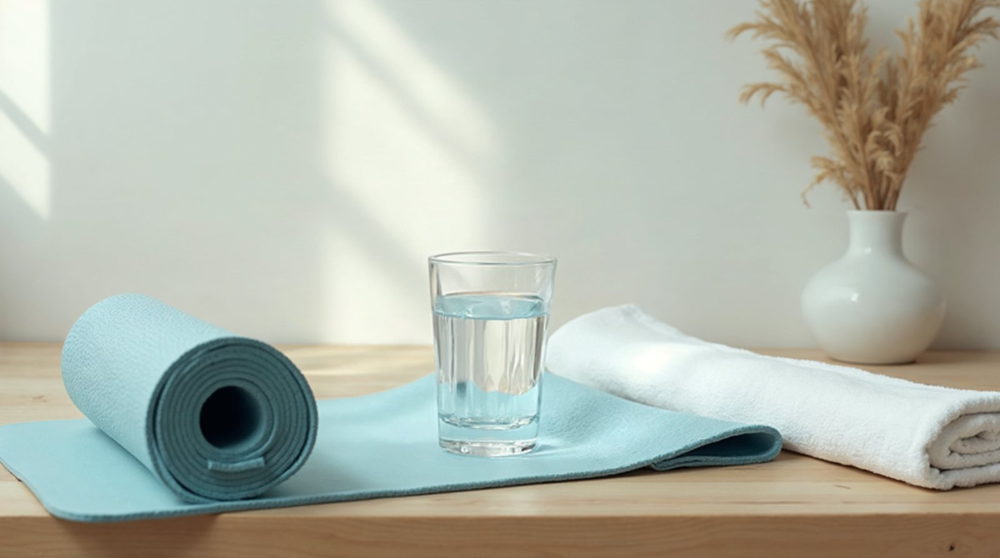
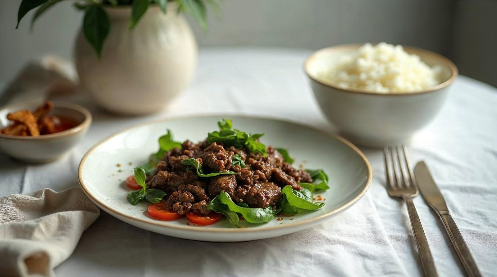
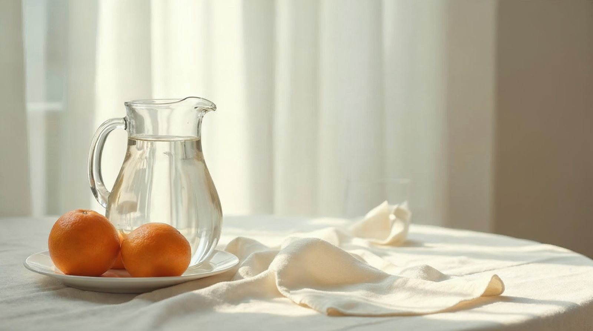
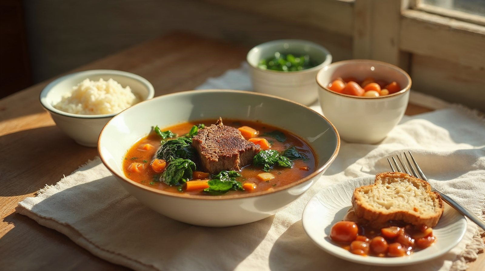

이종호 한의사 감수좋은꿈참사랑한의원 대표원장 (한의사 면허번호 19769)발행 2026-11-26 · 수정 2026-11-26
이 글의 차례
체육 시간에 운동장을 한 바퀴 돌고 온 아이가 벤치에 주저앉습니다. 얼굴은 하얗고 숨은 가쁘고, 친구들은 벌써 다음 운동을 시작했는데 일어날 힘이 없습니다. 집에 와서는 "요즘 왜 이렇게 피곤하지" 하며 소파에 눕습니다. 계단을 오를 때 다리가 무겁고, 수업 중에 자꾸 졸린다고 합니다.
생리를 시작하고 한두 해가 지난 여학생에게서 이런 모습을 자주 봅니다. 사춘기라서, 공부가 힘들어서 그렇겠지 하고 넘기기 쉽지만, 검사를 해 보면 철분이 부족한 경우가 적지 않습니다. 빈혈은 천천히 진행되면 몸이 적응해 버려서, 본인도 얼마나 지쳐 있는지 모르는 채 지내기도 합니다.
청소년기 여학생은 철분이 부족해지기 쉬운 조건을 여러 개 동시에 가지고 있습니다. 키가 자라며 피의 양이 늘어나야 하고, 매달 생리로 피가 빠져나가며, 다이어트나 편식으로 먹는 철분은 부족해지기 쉽습니다.
이 글에서는 청소년 빈혈이 어떤 모습으로 나타나는지, 왜 생리를 시작한 뒤에 잘 생기는지, 병원 검사와 식사, 생활 관리, 한의원에서 함께 살피는 부분을 차례로 정리해 보겠습니다.
청소년 빈혈은 어떤 모습으로 나타나나요
빈혈은 피 속에서 산소를 나르는 혈색소가 부족한 상태입니다. 산소가 몸 구석구석까지 넉넉히 닿지 못하니 쉽게 지치고, 조금만 움직여도 숨이 찹니다. 청소년에게서 자주 보이는 모습은 이렇습니다.
- 잠을 자도 피곤하고, 오후만 되면 늘어진다
- 계단이나 언덕을 오를 때 숨이 차고 가슴이 두근거린다
- 일어설 때 어지럽고 눈앞이 캄캄해진다
- 얼굴과 입술, 눈꺼풀 안쪽이 창백하다
- 손발이 차고 추위를 많이 탄다
- 집중이 잘 안 되고 쉽게 예민해진다
- 손톱이 얇아지고 잘 부러지며, 머리카락이 많이 빠진다
- 얼음이나 생쌀처럼 이상한 것을 씹고 싶어진다
마지막 항목은 의외로 철분 부족에서 자주 나타나는 모습입니다. 아이가 얼음을 유난히 깨물어 먹는다면 한 번쯤 철분을 떠올려 보세요.
왜 생리를 시작한 뒤에 빈혈이 잘 생길까요
사춘기에는 키와 몸무게가 빠르게 늘면서 몸속 피의 양도 함께 늘어나야 합니다. 피를 만드는 데는 철분이 꼭 필요한데, 자라는 속도가 빠를수록 필요한 철분의 양도 많아집니다.
생리를 시작하면 매달 일정한 양의 피가 몸 밖으로 빠져나갑니다. 생리를 시작한 초기에는 주기가 불규칙하고 양이 많거나 기간이 길어지는 경우가 흔해서, 빠져나가는 철분이 생각보다 많을 수 있습니다. 생리 양이 많은 편이라면 빈혈의 가능성은 더 커집니다.
여기에 식사의 조건이 겹칩니다. 아침을 거르고, 급식을 남기고, 다이어트를 한다며 고기를 피하고, 과자와 음료로 끼니를 대신하면 먹는 철분이 부족해집니다. 식사 직후 차나 커피를 마시는 습관은 철분 흡수를 방해하기도 합니다.
성장이 빠른 시기에 생리까지 시작되면 몸은 들어오는 철분보다 쓰는 철분이 많아지기 쉽습니다. 운동을 많이 하는 학생도 철분 소모가 많습니다. 땀으로 조금씩 빠져나가고, 근육이 많이 쓰이면서 필요한 양도 늘어나기 때문입니다.
한의학에서는 이런 모습을 혈이 부족한 상태, 혹은 비위가 약해 먹은 것을 혈로 잘 바꾸지 못하는 상태로 설명합니다. 얼굴빛이 누렇거나 창백하고, 입맛이 없으며, 생리 뒤에 더 지치는 모습이 함께 나타나는 경우가 많습니다.
피로와 어지럼, 다른 원인과는 어떻게 다를까요
청소년의 피로와 어지럼은 여러 이유에서 올 수 있습니다. 빈혈과 비슷해 보이는 상태를 함께 떠올려 봅니다.
- 기립성 조절장애: 아침에 특히 힘들고 오후에 나아지며, 혈액 검사는 정상인 경우가 많습니다.
- 수면 부족: 잠을 충분히 자면 한결 나아집니다.
- 갑상선 기능 변화: 피로와 함께 체중 변화, 추위 타기, 피부 건조가 있습니다.
- 우울: 피로와 함께 흥미가 줄고 기분이 오래 가라앉습니다.
두 가지 이상이 함께 있는 경우도 있습니다. 이런 상태들은 겉으로 비슷해 보여서, 혈액 검사로 빈혈이 있는지 먼저 확인하는 것이 출발점입니다. 혈색소는 정상이라도 철분 저장량을 보여 주는 수치가 낮은 경우가 있어서, 검사를 받으실 때 철분 관련 수치도 함께 볼 수 있는지 여쭤 보시길 권합니다.
생리 양이 많은지는 어떻게 알 수 있을까요
아이는 다른 사람의 생리 양을 알 수 없어서, 자기 양이 많은지 적은지 판단하기 어렵습니다. 보호자와 함께 아래 모습이 있는지 살펴보세요.
- 생리 기간이 7일을 넘는 경우가 많다
- 양이 많은 날에는 한두 시간마다 패드를 갈아야 한다
- 밤에 대형 패드를 써도 넘쳐 옷이나 이불에 묻는다
- 덩어리진 피가 자주 나온다
- 생리 뒤에 유난히 지치고 어지럽다
이런 모습이 반복된다면 빈혈 검사와 함께 산부인과나 소아청소년과에서 생리 양이 많은 이유를 확인해 보시는 것이 좋습니다. 드물지만 피가 잘 멈추지 않는 체질이 숨어 있는 경우도 있어서, 코피가 잦거나 멍이 쉽게 드는지도 함께 말씀해 주세요.

운동부나 운동을 즐기는 학생이라면
달리기나 수영, 농구처럼 운동을 많이 하는 여학생은 철분이 더 쉽게 부족해집니다. 운동량이 늘면 피를 만들어야 하는 양도 늘고, 땀으로도 조금씩 빠져나가기 때문입니다. 기록이 갑자기 떨어지거나, 평소 하던 훈련이 유난히 버겁게 느껴진다면 체력보다 철분을 먼저 떠올려 보세요.
운동하는 학생에게는 훈련 뒤 식사를 거르지 않는 것이 특히 중요합니다. 운동 뒤 한두 시간 안에 밥과 단백질 반찬을 챙기면 몸이 회복하고 피를 채우는 데 보탬이 됩니다. 생리 양이 많은 날에는 훈련 강도를 코치와 상의해 조절하는 것도 방법입니다.
진료실에서 자주 듣는 걱정
보호자께서 자주 물으시는 걱정 몇 가지를 정리해 봅니다.
- 키가 덜 클까 봐 걱정돼요: 빈혈이 오래 이어지면 자라는 데 쓸 힘이 부족해질 수 있어서, 확인되면 일찍 채워 주는 것이 좋습니다.
- 공부에 영향을 줄까요: 철분이 부족하면 집중력과 기억력이 떨어지는 느낌을 호소하는 경우가 많습니다. 그래서 공부 계획을 다시 세우기 전에 철분이 부족하지 않은지부터 확인해 보시길 권합니다.
- 한 번 생기면 계속 생기나요: 생리 양과 식사 습관이 그대로라면 다시 부족해질 수 있어서, 몇 달에 한 번 정도 상태를 확인해 보시길 권합니다.

스스로 점검해 보세요
아이와 함께 지난 한 달을 떠올리며 체크해 보세요. 체크가 여러 개라면 혈액 검사를 먼저 받아 보시길 권합니다.
- 생리를 시작한 뒤로 부쩍 피곤해졌다
- 계단을 오르면 숨이 차고 두근거린다
- 얼굴이나 입술이 창백하다는 말을 듣는다
- 고기나 생선, 달걀을 거의 먹지 않는다
- 아침을 거르는 날이 많다
- 생리 양이 많거나 기간이 길다
- 식사 직후 차나 커피를 자주 마신다
먼저 이렇게 여쭙니다
처음 오시면 아이와 보호자께 이렇게 여쭙니다. 생리 이야기는 아이가 편하게 대답할 수 있도록 조심스럽게 나눕니다.
- 피곤함과 어지럼은 언제부터 시작되었나요?
- 생리는 언제 시작했고, 주기와 기간, 양은 어떤가요?
- 하루 식사는 어떻게 하나요? 고기, 생선, 달걀, 콩은 얼마나 먹나요?
- 다이어트를 하거나 특정 음식을 피하고 있나요?
- 운동은 얼마나 하나요?
- 혈액 검사를 받은 적이 있나요? 철분제를 먹은 적이 있나요?
- 코피가 잦거나 멍이 잘 드는 편인가요?
검사 결과지와 생리 달력이 있으면 이야기가 훨씬 수월해집니다. 휴대폰 생리 기록 앱을 쓰고 있다면 그 화면을 보여 주셔도 좋습니다.
생리 이야기를 어색해하는 아이도 많습니다. 진료실에서는 아이가 불편해하지 않도록 필요한 것만 차분히 여쭙고, 원하면 보호자 없이 이야기할 수 있게 해 드립니다. 자기 몸의 변화를 부끄러워하지 않고 말할 수 있게 되는 것도 이 시기에 배워 가는 중요한 일이라고 생각합니다.

일상에서 먼저 해 볼 수 있는 것
빈혈이 확인되었다면 병원에서 권한 철분제를 꾸준히 먹는 것이 기본입니다. 그와 함께 식사와 생활을 받쳐 주면 몸이 피를 다시 채우는 데 보탬이 됩니다.
- 고기, 생선, 달걀처럼 철분이 많은 음식을 하루 한 번은 챙기기
- 시금치, 콩, 미역 같은 식물성 철분은 귤, 키위, 딸기처럼 비타민 C가 많은 과일과 함께
- 식사 직후 녹차나 홍차, 커피는 피하고 한두 시간 뒤로 미루기
- 아침은 거르지 않기: 달걀 하나와 밥 반 공기부터
- 생리 기간에는 무리한 운동을 줄이고 잠을 조금 더 자기
- 일어설 때는 천천히, 어지러우면 바로 앉기
철분제는 빈속에 먹으면 흡수가 잘 되지만 속이 쓰릴 수 있습니다. 속이 불편하면 식후에 먹거나 시간을 바꾸는 것을 처방한 선생님과 상의해 보세요. 철분제를 먹으면 변이 검게 보이거나 변비가 생기기도 하니 미리 알아 두시면 덜 놀랍니다.
급식을 남기는 아이라면 무엇을 주로 남기는지 물어봐 주세요. 고기 반찬이 질기거나 생선 가시가 싫어서 피하는 경우라면, 집에서는 다진 고기나 달걀말이, 두부조림처럼 먹기 편한 형태로 바꿔 주는 것만으로도 철분을 챙기기가 쉬워집니다. 채식을 하는 아이라면 콩과 두부, 견과류를 매 끼니 조금씩 넣고, 영양 상담을 함께 받아 보시길 권합니다.
철분 수치는 몇 주 만에 오르기 시작하지만, 몸속 저장량까지 채우려면 몇 달이 걸리는 경우가 많습니다. 기운이 좀 난다고 철분제를 일찍 끊지 말고, 처방한 선생님이 정한 기간까지 이어 가 주세요.
한의원에서 함께 살필 수 있는 경우
- 빈혈 치료를 받으면서도 쉽게 지치고 손발이 찬 경우
- 철분제를 먹으면 속이 불편하고 변비가 심해지는 경우
- 입맛이 없고 소화가 약해 식사를 충분히 하기 어려운 경우
- 생리통이 심하고 생리 뒤에 유난히 기운이 빠지는 경우
- 생리 주기가 불규칙하고 양이 많아 걱정되는 경우
좋은꿈참사랑한의원에서는 진찰을 먼저 하고, 그 결과에 따라 식사와 생활 조정과 함께 침, 따뜻하게 하는 관리, 한약 상담 가운데 지금 아이에게 맞는 것을 고릅니다. 한약을 상의할 때는 먹고 있는 철분제와 다른 약을 모두 확인하고, 보호자와 함께 신중하게 정합니다.
병원에서 처방받은 철분제는 그대로 이어 가셔야 합니다. 한의원 진료 때문에 약을 멈추지 않으며, 철분제 복용에 관한 결정은 처방한 선생님과 상의하시도록 안내합니다. 한의원 진료는 병원 치료와 나란히 가며 소화와 기운, 생리의 흐름을 함께 살피는 역할이라고 생각해 주세요.
이렇게 기록해 오시면 상담이 쉬워집니다
한두 달 정도 아이와 함께 간단히 적어 보세요. 생리 기록 앱을 쓰고 있다면 거기에 메모를 덧붙여도 충분합니다.
- 생리 시작일과 끝난 날, 양이 많았던 날
- 하루 패드나 생리대를 바꾼 횟수
- 피로와 어지럼 점수(0~10)
- 고기, 생선, 달걀을 먹은 날
- 철분제를 먹은 날과 속 불편, 변비 여부
생리 기간과 피로 점수를 나란히 놓고 보면 생리 뒤에 얼마나 지치는지, 회복에 며칠이 걸리는지가 보입니다. 그 흐름이 식사와 생활을 어디서 보태야 할지 알려 주는 단서가 됩니다.
기록은 완벽하지 않아도 됩니다. 빠진 날이 있어도 괜찮고, 아이가 바쁜 시험 기간에는 생리 날짜만 적어도 충분합니다. 중요한 것은 한두 달의 흐름을 한눈에 볼 수 있게 남겨 두는 것입니다. 다음 혈액 검사 때 그 기록을 함께 가져가시면 병원 선생님과 이야기를 나누기도 훨씬 쉬워집니다.

자라는 몸에 피를 채우는 시간
청소년기의 빈혈은 자라는 몸과 생리라는 큰 변화가 겹쳐 생기는 경우가 많습니다. 아이 탓도, 보호자 탓도 아닙니다. 원인을 확인하고 필요한 것을 채워 주면 몸은 다시 기운을 찾아갑니다.
이번 주에는 혈액 검사 결과를 확인하고, 하루 한 끼는 철분이 든 반찬을 챙기는 것부터 시작해 보세요. 다음에 오시면 생리 기록과 함께 다음 걸음을 정하겠습니다.
이런 증상은 먼저 확인이 필요합니다
- 생리 양이 너무 많아 한 시간마다 패드가 넘치거나, 어지러워 쓰러질 것 같은 경우
- 숨이 차서 걷기 힘들고 가슴이 심하게 두근거리거나, 변이 검고 끈적하게 나오는 경우
이런 신호가 있으면 한의원보다 가까운 병원이나 응급실을 먼저 찾으세요.
함께 읽으면 좋은 글
- 빈혈이 있다는 말을 듣고 어지럽고 쉽게 지칠 때, 철분과 생활은 어떻게 살피나요?
- 생리 양이 너무 많을 때(월경과다)는 무엇을 확인하고 어떻게 살피나요?
- 중고등학생 딸이 생리 때마다 배를 움켜쥐고 학교를 힘들어할 때(청소년 생리통)는 어떻게 살피나요?
- 앉았다 일어설 때 어지러운 것은 어떤 점을 살펴보나요?
- 손발이 찬 수족냉증, 레이노·갑상선·빈혈과 어떻게 구분하나요?

여쭙는 것
- 피곤함과 어지럼은 언제부터 시작되었나요?
- 생리는 언제 시작했고, 주기와 기간, 양은 어떤가요?
- 하루 식사는 어떻게 하나요? 고기, 생선, 달걀, 콩은 얼마나 먹나요?
생활에서 해 볼 것
- 고기, 생선, 달걀처럼 철분이 많은 음식을 하루 한 번은 챙기기
- 시금치, 콩, 미역 같은 식물성 철분은 귤, 키위, 딸기처럼 비타민 C가 많은 과일…
- 식사 직후 녹차나 홍차, 커피는 피하고 한두 시간 뒤로 미루기
한의원에서 함께 살필 것
- 빈혈 치료를 받으면서도 쉽게 지치고 손발이 찬 경우
- 철분제를 먹으면 속이 불편하고 변비가 심해지는 경우
- 입맛이 없고 소화가 약해 식사를 충분히 하기 어려운 경우
먼저 확인이 필요한 신호
- 생리 양이 너무 많아 한 시간마다 패드가 넘치거나, 어지러워 쓰러질 것 같은 경우
- 숨이 차서 걷기 힘들고 가슴이 심하게 두근거리거나, 변이 검고 끈적하게 나오는 경우
한눈에 보는 표
| 구분 | 핵심 |
|---|---|
| 여쭙는 것 | 피곤함과 어지럼은 언제부터 시작되었나요? 생리는 언제 시작했고, 주기와 기간, 양은 어떤가요? |
| 생활에서 해 볼 것 | 고기, 생선, 달걀처럼 철분이 많은 음식을 하루 한 번은 챙기기 시금치, 콩, 미역 같은 식물성 철분은 귤, 키위, 딸기처럼 비타민 C가 많은 과일과 함께 |
| 한의원에서 함께 살필 것 | 빈혈 치료를 받으면서도 쉽게 지치고 손발이 찬 경우 철분제를 먹으면 속이 불편하고 변비가 심해지는 경우 |
| 먼저 확인이 필요한 신호 | 생리 양이 너무 많아 한 시간마다 패드가 넘치거나, 어지러워 쓰러질 것 같은 경우 숨이 차서 걷기 힘들고 가슴이 심하게 두근거리거나, 변이 검고 끈적하게 나오는 경우 |
자주 묻는 질문
철분제는 얼마나 오래 먹어야 하나요?
혈색소가 정상으로 돌아온 뒤에도 몸속 저장량을 채우기 위해 몇 달 더 먹는 경우가 많습니다. 기간은 검사 결과를 보며 처방한 선생님이 정하시니, 기운이 난다고 일찍 끊지 않도록 해 주세요.
음식만으로 빈혈을 채울 수 있나요?
가벼운 철분 부족은 식사로 보탤 수 있지만, 빈혈이 확인되었다면 음식만으로 채우기에는 시간이 오래 걸리는 경우가 많습니다. 병원에서 권한 철분제와 식사를 함께 챙기시길 권합니다.
철분제와 한약을 함께 먹어도 되나요?
먹고 있는 철분제와 약을 모두 확인한 뒤 신중하게 정합니다. 필요하면 먹는 시간을 나눠 드리고, 처방한 선생님과 상의하시도록 안내합니다.
남학생도 빈혈이 생기나요?
생기기도 합니다. 키가 빠르게 크는 시기나 운동량이 많은 경우, 편식이 심한 경우에는 남학생도 철분이 부족해질 수 있어서, 피로와 창백함이 이어지면 검사를 받아 보시길 권합니다.
생리 양이 많은 것도 한의원에서 볼 수 있나요?
산부인과에서 원인을 먼저 확인하시는 것이 좋습니다. 그 뒤 생리 주기와 몸의 기운을 함께 살피는 진료를 나란히 받으실 수 있습니다.
좋은꿈참사랑한의원은 재진 때 지난번 이야기부터 이어서 여쭙니다. 진료시간과 예약은 오시는 길에서 확인하세요.
어디서 상담받을 수 있나요?
좋은꿈참사랑한의원은 서울 동작구 만양로2길 2 신성빌딩 3층·5층(서울 동작구 상도동, 7호선 상도역 3번 출구 근처)에 있습니다. 한의사 3명(이종호 대표원장, 조영기 수석진료원장, 정원영 진료원장)이 진료합니다. 진료시간은 평일 09:30~20:00(점심 13:00~14:00), 토·일·공휴일 09:30~15:00이며, 방문 전 전화로 확인을 권합니다. 예약은 네이버 예약, 카카오톡 상담, 전화 02-815-7510로 받습니다.
이 글은 일반적인 건강 정보이며 개인의 진단이나 치료를 대신하지 않습니다. 증상이 있거나 복용 중인 약이 있다면 진료를 통해 확인하세요. 치료 효과는 개인마다 다를 수 있습니다.
작성 기준: 일반적으로 알려져 있는 건강 정보를 참고해 정리했습니다(대표원장 감수). 증상 기록은 1~2주 동안 하루 1회, 비슷한 시간에 적어 오시면 지난 상태와 비교하기 쉽습니다.